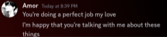
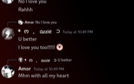
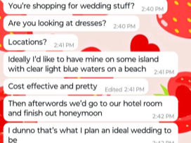
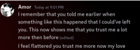

When you tell me you will never be mad or upset with me it
means a lot because it reassures me. More than you would
know. Even if i happen to ask it quite a bit it still means a lot
to me and I know with the way you say it you mean those
words you type out to me. It lets me know you will be patient
with me no matter what and genuinely makes me feel better.
Secondly when you add "so so much" after I love yous I find
those very important. Instead of an all the time thing it's an
every so often thing to let me really know you do love me
and it's not just something you say. Lastly when you say
"alright I'll be here" it means a lot because I know you mean
it and when I get back, even if it takes you a second to respond,
you are always there for me and always will be.
The fact you use perfect instead of something like good or
nice makes it mean so much more. It tells me you truly do
feel these things and it's also very reassuring. It truly does
make me feel good. And as you know I'm very big on praise.
Not in a weird in this scenario. And when you tell me you're
happy that I'm talking to you about these things makes me
think you do want me to talk to you and it makes me trust
you more and become more comfortable with you.
Gaaa there's something about the way you say Mhm it just
makes me feel things. Like it's said in such a certain and direct
but soft way in which makes it so loving and loveable. And the
fact you add on with "with all my heart" just makes it sm better.
It shows your love for me.
When you told me you love me heart body mind and soul
it meant a lot to me. Shows you do truly love me a lot. Even
with how I look. I'm very insecure about my personality and
my looks especially and it meant a lot when you said that
because you've never said it before especially.
I admire this because you didn't judge me for shopping
for stuff like that. You immediately asked me questions and
shared what you liked and I like knowing what you like. It
made me feel happy when you shared that with me because
how you feel is important to me, and it makes me happy
The main thing about this one is the word choice and honesty.
You were incredibly honesty with me and show that I can trust
you even more. And you do like when I trust you. You strive for
that. Trust. And I appreciate that. I love that. I do. It also meant
a lot to me that you even remember the things I said. I can never
even remember the things I say so the fact you remembered some
thing I said and it was important enough for you to remember
means a lot.